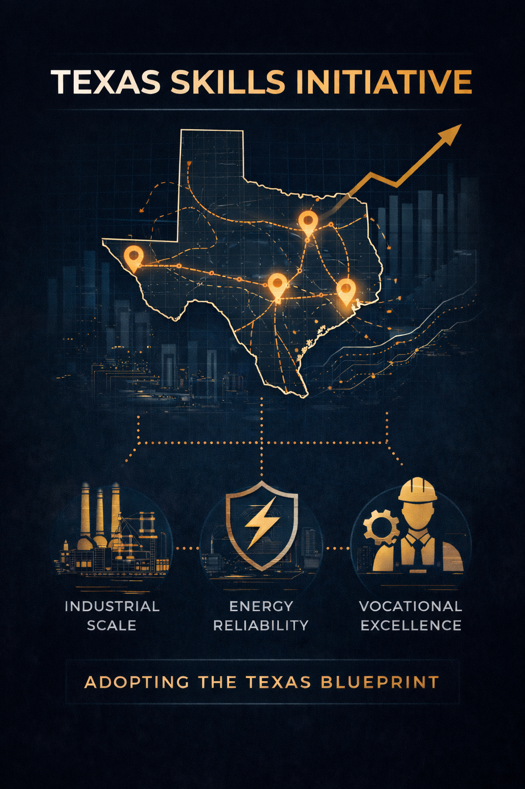

What You Send
Operational context, constraints, and observed opportunities from your vantage point.

Identifying high-potential economic regions and aligning workforce systems.
Texas industrial standards guide our methods, but local context determines the outcome.
We prioritize regional intelligence over external playbooks. We do not and will not deploy pre-set plans.
Strategic success is impossible in a vacuum.
Local institutional knowledge is the essential data that activates our framework.
Collaboration begins at your table. We engineer solutions tailored to refine and enrich the local ecosystem.
Our audit identifies where your region already leads the world. We leverage your existing strengths with the global industrial pipeline.
Pre-Recommendation Protocol
TSI conducts a rigorous technical and regulatory vetting process before any formal industrial recommendation is issued.
Selected Rubric Action
Identify where technical education supply already aligns to corridor needs, then capture evidence gaps through structured intake.
Output: Workforce capability baseline and fast-gap shortlist for evaluation.
Map
PNG Map (legacy)
Structured Intake Channel
Start with context, not a proposal.
TSI engagement begins with disciplined intake from regional institutions, operators, and technical stakeholders. We map what is already true on the ground before discussing any corridor path.
What You Send
Operational context, constraints, and observed opportunities from your vantage point.
What We Evaluate
Rubric alignment, stage readiness, and potential corridor fit based on submitted evidence.
What Happens Next
If alignment exists, we schedule a scoped dialogue with clear expectations and boundaries.
Select your perspective and submit relevant institutional or regional insight. No obligation is created by submission.
TSI reviews inputs against corridor stage criteria and rubric domains to assess structural alignment.
If alignment exists, we schedule a structured dialogue to define scope, expectations, and evaluation criteria before any formal engagement.
Intended for
Submission does not create partnership or obligation; it establishes a channel for disciplined evaluation.

Statement from the Founder
To our Regional Partners,
Most external firms arrive with a prebuilt plan before they've even stepped foot in your city. To me, that isn't just a lack of effort, it's a technical failure.
Strategic success is impossible in a vacuum. Your regional institutional knowledge is the essential data that activates our framework; without your ground-truth, our methods have no anchor.
We don't do anything the same way twice, because your region only happens once. When we sit down at your table, we aren't here to implement a pre-packaged plan. We are here to engineer a solution from scratch that refines and enriches your local ecosystem.
Michael Steiner
Founder, Texas Skills Initiative
TSI operates with a lean core... Roles shown reflect areas of responsibility and communication, not current staffing levels.
At Texas Skills Initiative, we leverage the power of Texas' Tested economic engines to design one-of-a-kind development pipelines. Providing engineered and exclusively crafted solutions tailored to the needs of YOUR growth region.
Click to continue